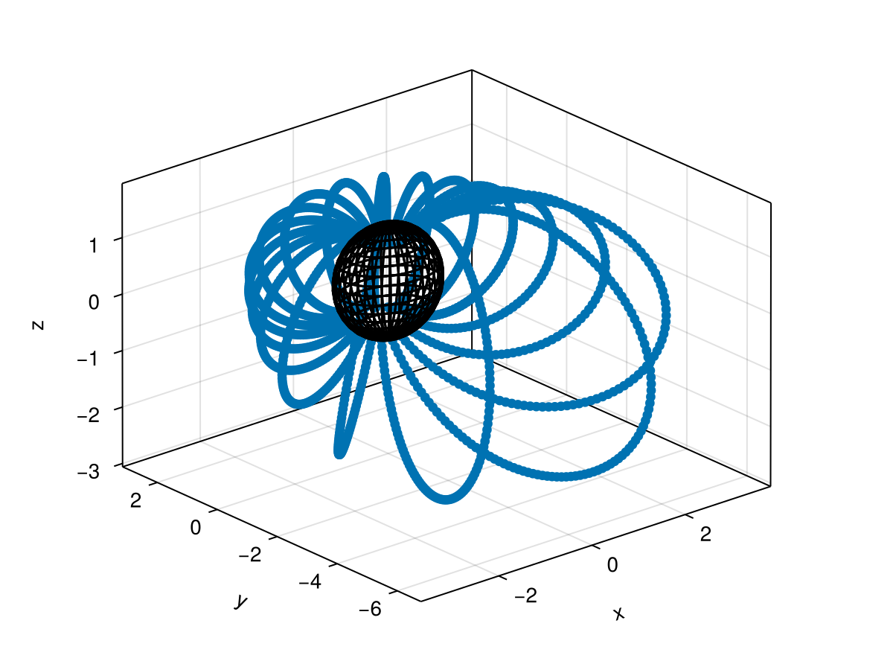
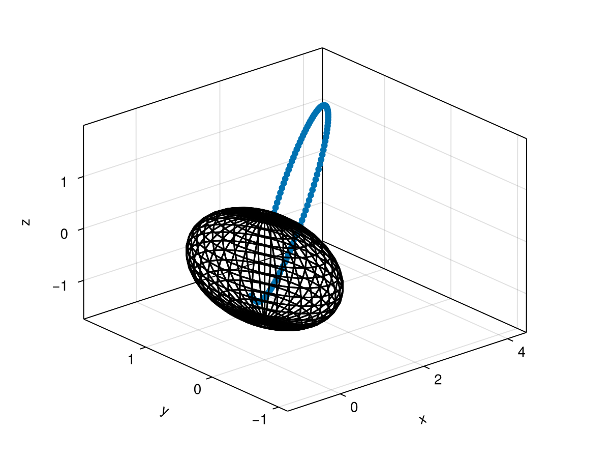

using CairoMakie
using IRBEM
# Draw sphere
function draw_sphere!(ax)
u = range(0, 2π, length=40)
v = range(0, π, length=20)
xs = @. cos(u') * sin(v)
ys = @. sin(u') * sin(v)
zs = ones(40)' .* cos.(v)
wireframe!(ax, xs, ys, zs, color=:black)
end
draw_sphere! (generic function with 1 method)
# Set up model and inputmake_lstar
model = MagneticField()
maginput = Dict("Kp" => 40.0)
time = "2015-02-02T06:12:43"
𝐫 = GDZ(651, 63, 15.9)
out = trace_field_line(time, 𝐫, maginput)
# Plot field line
fig = Figure()
axis = (xlabel="x GEO", ylabel="y GEO", zlabel="z GEO")
ax = Axis3(fig[1, 1]; axis..., limits=((-5, 5), (-5, 5), (-5, 5)))
positions = Point3f.(eachcol(out.posit)[1:8:end])
scatter!(ax, positions)
draw_sphere!(ax)
fig

maginput = Dict("Kp"=>0.0)
posits = mapreduce(hcat, 0:20:360) do x3
output = trace_field_line(time, GDZ(651, 55, x3), maginput)
output.posit
end
fig = Figure()
ax = Axis3(fig[1, 1])
scatter!(Point3f.(eachcol(posits)[1:3:end]))
draw_sphere!(ax)
fig
maginput = Dict("Kp"=>40)
output = drift_shell(time, 𝐫, maginput)
posits = Point3f.(vec(eachslice(output.posit;dims=(2,3))))
fig = Figure()
ax = Axis3(fig[1, 1])
scatter!(ax, posits)
draw_sphere!(ax)
fig
